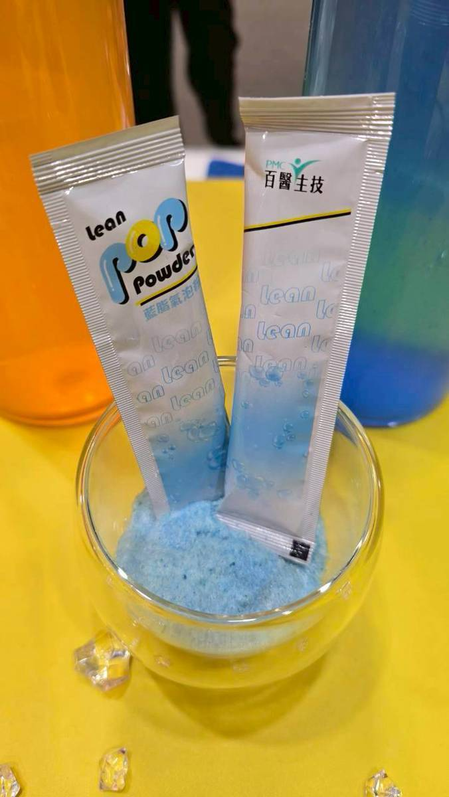
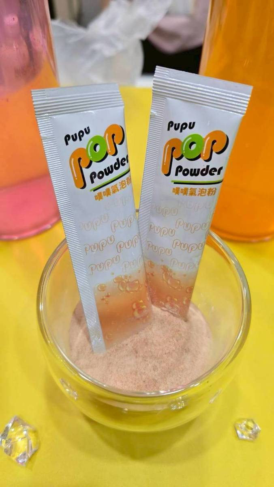
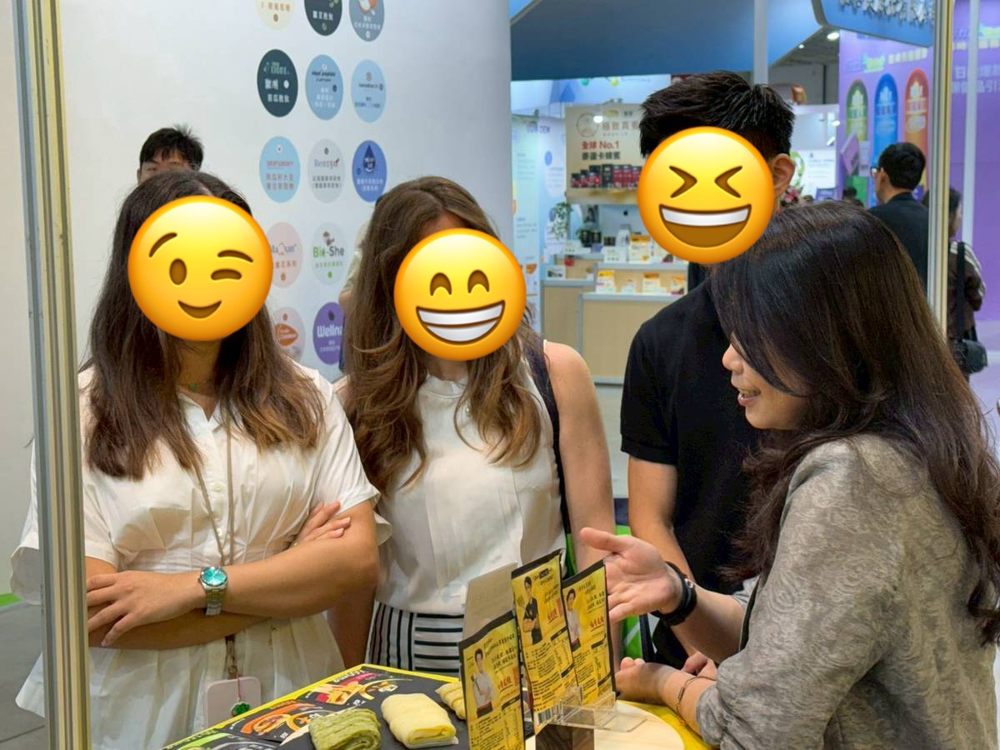
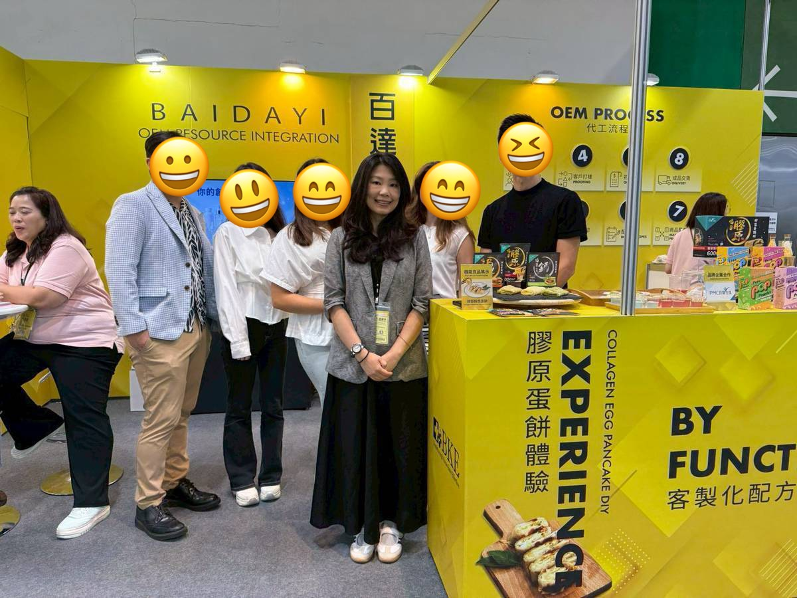
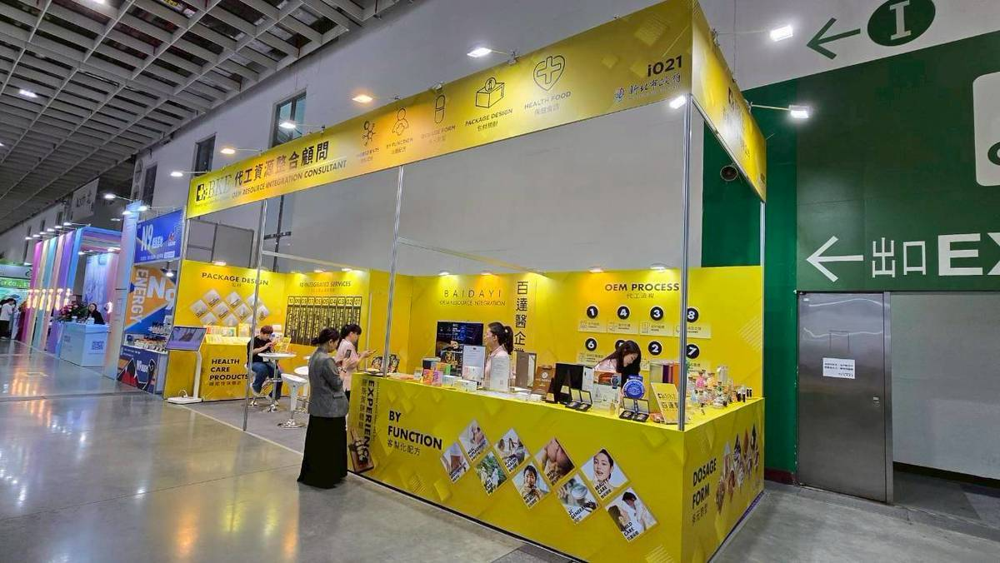
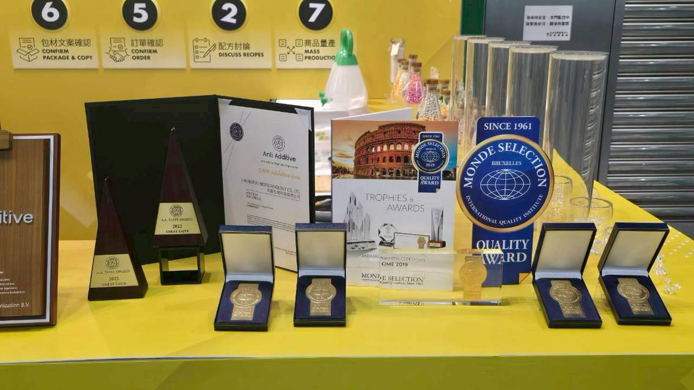
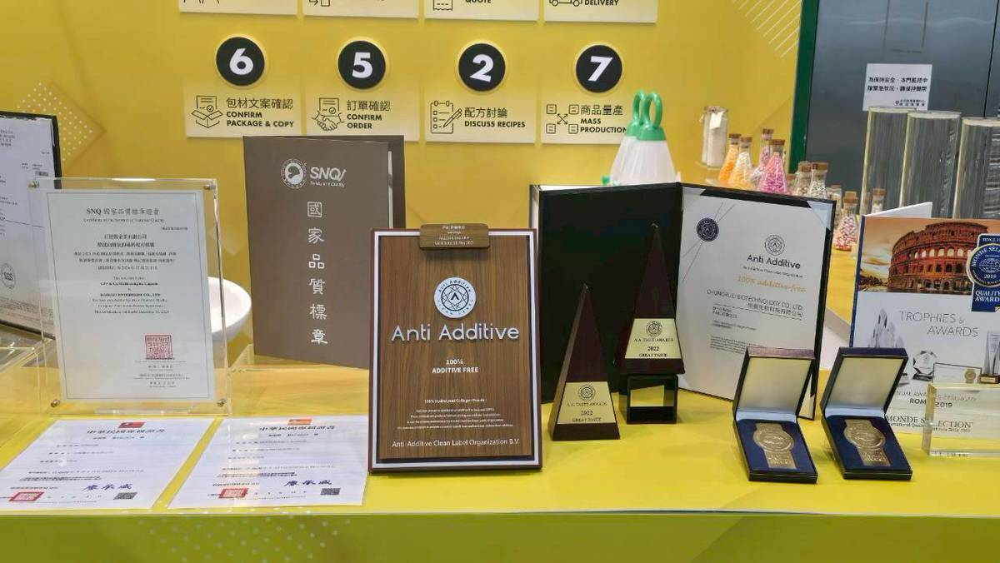
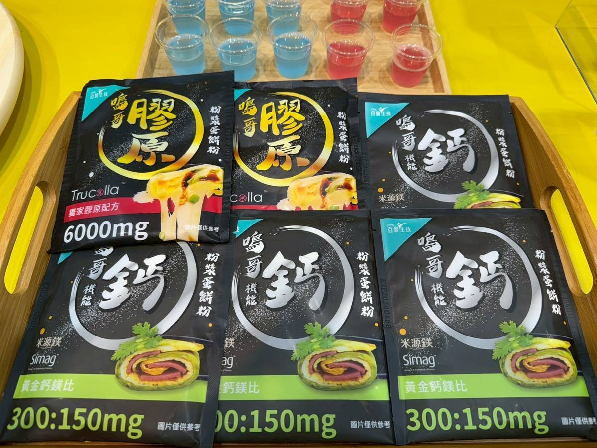

2026 亞洲美容生技大展圓滿落幕！
百達醫企業（BKE）此次以「OEM Resource Integration」為核心概念，攜手百醫生技（PMC）展示最新機能食品研發成果、OEM／ODM整合服務及品牌創新產品，吸引來自台灣、香港及海外買主駐足交流，現場洽詢氣氛熱絡。
✦ 打造最具話題性的機能食品展示區
本次展覽最大的亮點之一，就是首次公開展示「機能粉漿蛋餅粉」系列，將保健概念融入日常飲食。
推出：
- 膠原蛋餅
- B群蛋餅
- 鈣蛋餅
透過現場實際料理與試吃，讓參觀者親身體驗「保健食品也能很好吃」，獲得許多品牌商及通路客戶高度關注。
保健飲品新趨勢——POP機能氣泡粉 ✦


除了機能蛋餅之外，POP Powder 機能氣泡粉系列同樣成為熱門詢問焦點。現場展示不同功能配方，包括：
- 機能氣泡飲
- 輕盈系列（Lean）
- 客製化OEM配方
兼具便利性、風味及創新劑型，展現未來機能飲品市場的新方向。
✦ 海外買主現場交流 洽談合作商機


展覽期間，不少海外買主親自蒞臨展位了解產品特色，團隊針對OEM合作模式、產品定位、客製化配方及海外市場需求進行深入交流。透過面對面的專業介紹，也讓更多國際客戶認識百達醫企業完整的整合能力。
從產品到品牌 一站式OEM整合服務 ✦

百達醫企業不只是代工製造商，更是品牌創業的整合夥伴。我們提供完整服務，包括：
協助客戶快速完成產品上市。
✦ 品質實力 深受國際肯定


品質一直是百達醫最重視的核心價值。現場同步展示公司多年累積的重要品質驗證及國際獎項，不僅代表研發與製造能力受到肯定，更是客戶選擇合作的重要信心來源。
持續研發 創造更多市場可能 ✦

百達醫持續投入機能食品創新研發，從配方設計、劑型開發到市場應用，不斷探索保健食品的新可能。未來也將持續結合創新原料、生活化產品及OEM整合服務，陪伴更多品牌打造具有市場競爭力的產品。
✦ 感謝每一位蒞臨百達醫展位的朋友 ✦
感謝每一位蒞臨百達醫展位的合作夥伴、品牌客戶及海內外朋友。因為有您的支持與交流，讓我們持續精進研發、提升品質，朝著成為亞洲值得信賴的保健食品OEM／ODM整合夥伴邁進。期待下一次展會，再與您相見！